Canapés et relax
Salon
Canapés et fauteuils relax italiens et européens, du classique au contemporain. Comparez les assises, les revêtements et les fonctions de confort dans notre showroom.
- Des salons et des relax à essayer
- Du lundi au samedi, avec ou sans rendez-vous
- Première visite et conseil offerts

Max Divani
Le savoir-faire italien du confort.
Née en 1956 à Altamura, dans les Pouilles, Max Divani fabrique des canapés et des fauteuils. Au magasin : une sélection de salons, du 3-2 classique au grand angle.
Découvrir Max Divani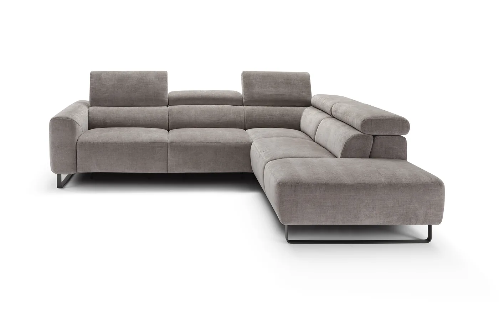
Exposé au magasin
Zebra, l’angle qui se compose.
Un canapé à appuie-têtes réglables, en angle avec chaise longue ou en deux et trois places. Avec ou sans relax électrique, en tissu ou en cuir.
Découvrir Zebra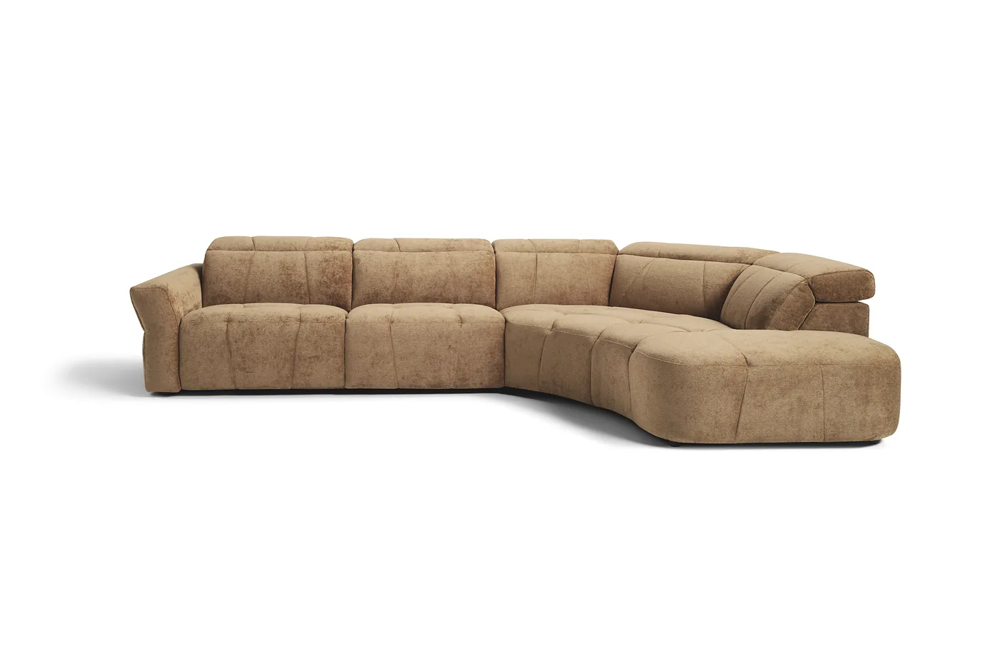
Prochainement au magasin
Tata, un grand angle arrondi.
Formes souples et assise profonde : Tata est attendu mi-janvier 2027.
Découvrir TataNicoletti, le relax Cozy³
Un confort réglable, place par place.
Au magasin, essayez les moteurs des modèles Memphis et Oakland. Chaque place relax a sa propre commande, pour que chacun choisisse sa position. Le système Cozy³ de Nicoletti réunit trois moteurs indépendants.
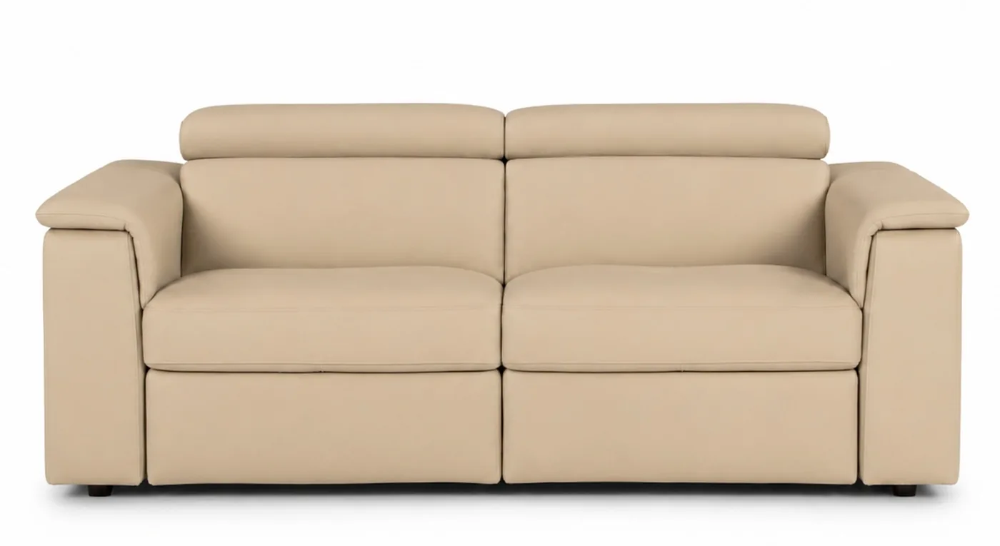
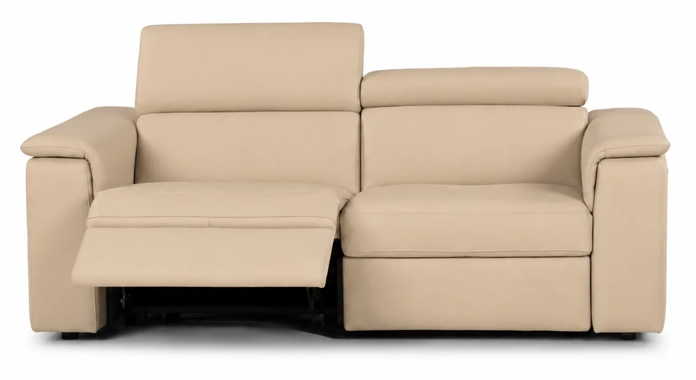
- Le relax Le dossier s’incline et le repose-jambes se relève, ensemble ou séparément selon le modèle.
- La tête L’appui-tête se redresse séparément, pour lire ou regarder l’écran.
- Le bas du dos Un soutien lombaire réglable complète le confort (sur Memphis : version Comfort).
Voir aussi les canapés relax Nicoletti, fabriqués en Italie, et les fauteuils relax et releveurs De Eiken Zetel, d’un fabricant belge.
-
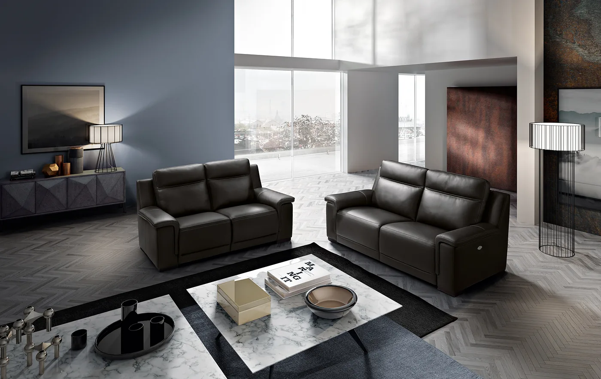
-

-
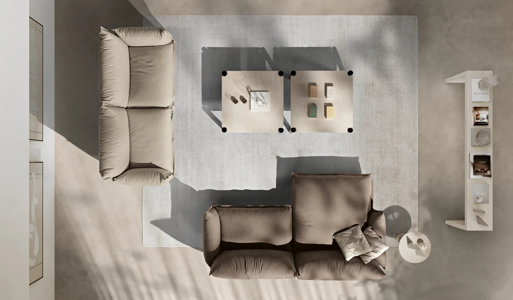
Le revêtement se choisit modèle par modèle, échantillons en main, avec une photo de votre pièce.

La matière
Toucher avant de choisir.
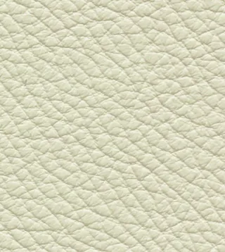
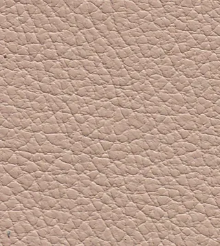
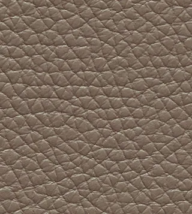
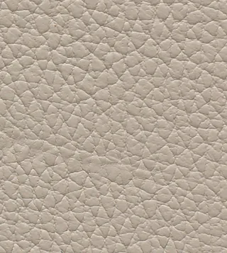
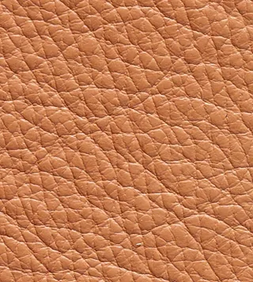
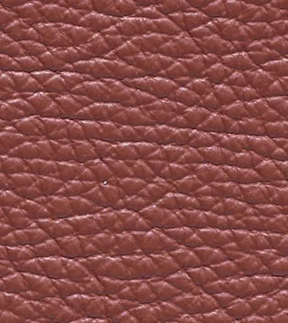
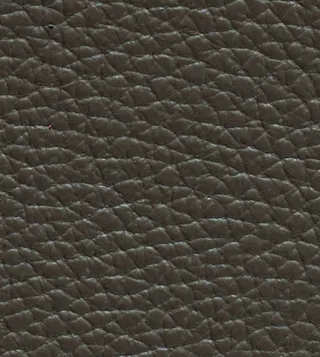
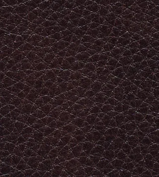
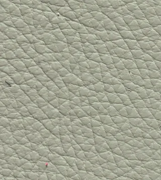
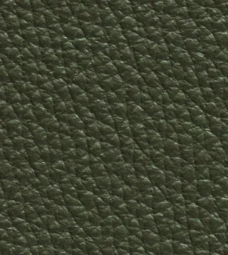
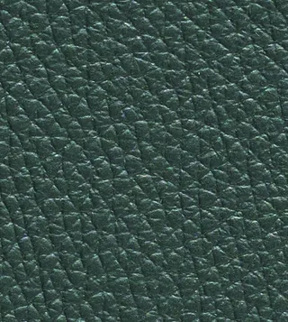
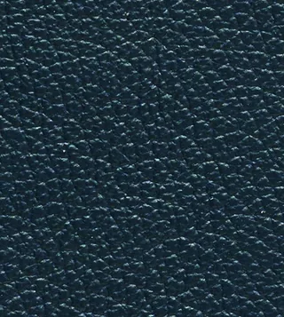
Douze des 24 coloris du cuir Texas de Max Divani. Les couleurs varient selon l’écran : voyez-les sur échantillon, au magasin.
Mon projet salonAutour du canapé
La table basse, le meuble TV, la bibliothèque.
-

Les tables basses
En céramique ou en verre, chez Akante.
-

Le meuble TV
Adapté à votre mur.
-

La bibliothèque
Dans les finitions du séjour.


Vos questions
Avant de choisir.
Peut-on essayer un relax électrique au magasin ?
Oui. Des salons et des fauteuils relax sont exposés au magasin : comparez leurs positions et leur confort.
Quelle différence entre un fauteuil relax et un fauteuil releveur ?
Le fauteuil relax permet de s’incliner et de relever les jambes ; le releveur ajoute une aide pour se mettre debout.
Venez essayer nos salons.
Venez essayer nos salons à Leval-Trahegnies, à quelques minutes de Morlanwelz et d’Anderlues, à un quart d’heure de La Louvière. Notre équipe vous aide à choisir la configuration, les revêtements et les fonctions qui vous conviennent. Parking facile d’accès.
- Lundi
- 13h30 – 18h30
- Mardi au samedi
- 10h30 – 18h30
- Dimanche
- Fermé
- Téléphone
- 064 46 07 72
- Livraison
- Par nos soins, dans le Hainaut (Binche, La Louvière, Mons, Charleroi…) et la province de Namur
Ailleurs en Belgique, dont Bruxelles : sur demande.